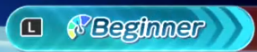

Time Attack

Time Attack is my personal favorite mode in this Game. I have put majority of my gameplay hours here. I have and still currently hold several World Records(WR) for many of the Tracks. Time Attack in this game is pretty simple. The player will choose a Character and will have 3 Laps to race around a certain track of their choice as fast as you can, choosing from 2 Speed Classes: 'Beginner Speed' or 'Master Speed'.
Beginner Speed
As one would guess, this speed is the slowest of the two. This speed is perfect for players that are new to the game and want to get
a proper feel for the game, however, as a competitive Time Trialer for both speeds, I'd say this speed requires a different playstyle due to the different
strategies used for each speed. For example, there are certain shortcuts that can be taken compared to Master Speed, vise-versa.
Master Speed
Master Speed is the fastest of the two classes. This speed is recommended for players that want a challenge and are comfortable with the
mechanics and gameplay. Keep in mind, this class requires a completely different playstyle compared to Beginner Speed such as taking more shortcuts.
Each Track also has a Staff Ghost time to beat. Beating these times will award Tickets that can then be used to buy Characters and Vehicles, etc.
Below is a link to every World Record for both Speeds as well as the Progression for each track.